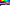

Piethon
What is Piethon?
Piethon is based off of Piet where it runs off Python, each colour represents a character.
But why?
Well i'm trying to learn Piet but i'm having a hard time, however I do like the idea of programs made using pictures. Where you can just have a bunch of photos hosted on a site, and their programs!
What colours are letters?

Here is the image of the colours. The characters go in order from left to right (besides the white), "a", "b", "c", "d", "e", "f", "g", "h", "i", "j", "k", "l", "m", "n", "o", "p", "q", "r", "s", "t", "u", "v", "w", "x", "y", "z", '"', "=", "(", ")", "0", "1", "2", "3", "4", "5", "6", "7", "8", "9", ":", ";", ",", "'", "-", "+", " ", ".", "!", "?", "\n".
Where can I try this out?
I've included a link to a hosted zip file which contains the colors.png, python script file (both required), a hello world script and a picture (called piethon.png) which contains a pallete you can use to work on programs.
Download - catbox.moe
How do I make a program?
I use Asesprite, I then click on the button with three lines at the top (that is when you have made a new picture) and select load pallete, then I load piethon.png which loads my pallete. I then edit my picture. The picture can be whatever size as well.
Scripts made before:
Hello World - This is the first program ever made in Piethon. It simply prints "hello world!", since I felt caps wasn't really needed that's why they aren't there.
Submit your made programs by sending me a PM on Discord at Jacklack3#2349.